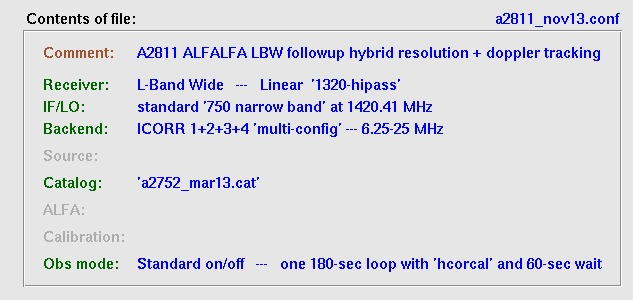
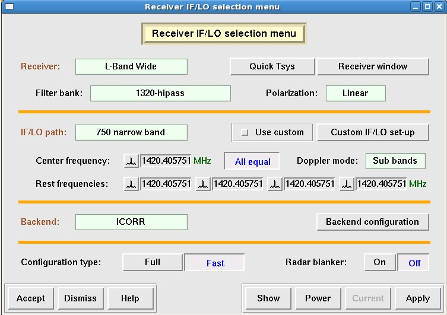
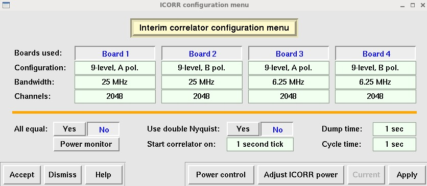
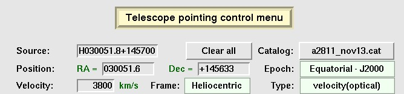

- Type cima --X in an available window. Select the desired version of CIMA; this is currently "The Stable version (Default) (Ver 3.3.05 2013-02-22 15:46")"
- Project Number: a2811 (note: even if you type "A", CIMA will change it to "a" when you click "Line")
- Observer: your name (for entry into operator's log book)
- select Line and Accept
Several other windows will also open: the CIMA log display window and the CIMA observation status window. Leave them open through the night.
Make sure that L-wide shows up in the aostatus monitor. Leave the default options as is:
- Make quick Tsys measurement: No
- Rotate receiver into position: Yes
- Retrack source if selected: Yes
Load the appropriate a2811 configuration file: a2811_nov13.conf
This corresponds to the high velocity mode in our terminology.  Then click Load and apply.
Be patient while the configuration file is applied....
If you cannot find the configuration file (or if only the a2010 files are present), then you entered the wrong project number into the CIMA opening window. You will have to exit CIMA and enter a2811
This should be set up automatically by the configuration file, so that these items should always be set as follows:
 When you have checked things, you can Close this window.
When you have checked things, you can Close this window.
This should be set up automatically by the configuration file but you need to know what correlator board configuration you are using, so it's a good idea to check.
Currently, we are using one basic observing mode (in the past, we sometimes used a second one, but not now). Note that we normally concentrate on the first two correlator boads (1 and 2); the second set are used for monitoring purposes or to achieve higher resolution according to the observing mode. This mode, dubbed "high velocity", moves the bandpass around according to the velocity of the source.  When you have checked things, you can Dismiss this window.
- If anything needs to be changed, make sure you have the correct configuration file.
- If this does not help, change the settings manually, then click Apply followed by Accept.
This should be set up automatically by the configuration file, so that these items should always be set as follows:  When you have checked things, you can Dismiss this window.
This should be set up automatically by the configuration file, so that these items should always be set as follows:
|  |
|
When you have checked things, you can Dismiss this window.
- Click on Command file observing
- Click on Load
- Highlight the correct command file: a2811_YYMMDD.cmd and click Accept
- Click on Run and cross your fingers....
Note: If you need to skip sources that are at the beginning of the command file, Load the command file as usual. After it loads, it waits for 10 seconds (the WAIT 10 line in the command file). As soon as it starts to wait the 10 seconds, hit Stop. Quickly identify the proper line in the file to pick up the source at which you want to start observing (e.g. a "GOTO" line). Click on it or enter the line number to the left and then hit Run. Skipping or repeating sources is definitely something you want to practice using CIMA offline before your first night of observing. See also instructions below under What if the timing gets out of whack.